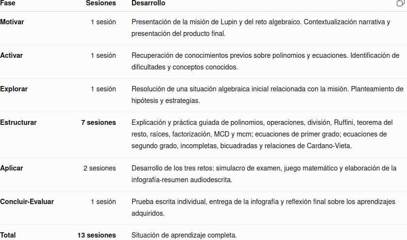

Justificación didáctica
Esta situación de aprendizaje, titulada «Lupin: el último golpe algebraico», se plantea para 4º de ESO Matemáticas B y utiliza el universo narrativo de la serie Lupin como contexto motivador para trabajar contenidos de polinomios y ecuaciones de primer y segundo grado. La propuesta pretende conectar los aprendizajes matemáticos con una situación cercana y significativa, favoreciendo que el alumnado comprenda las matemáticas como una herramienta para analizar, resolver problemas y tomar decisiones.
La propuesta se relaciona con los principios pedagógicos establecidos en la LOMLOE, especialmente con el desarrollo integral del alumnado, el aprendizaje significativo, la aplicación práctica de los conocimientos, la competencia matemática y la autonomía en el aprendizaje. Se fomenta igualmente la comprensión lectora, la expresión oral y escrita, la competencia digital, la creatividad y la capacidad para aprender de los errores. La resolución de retos y la elaboración de una infografía audiodescrita favorecen además la participación activa y la reflexión sobre el propio aprendizaje.
La situación incorpora los principios de igualdad y no discriminación, utilizando un referente cultural diverso como punto de partida para reflexionar sobre la sociedad y las oportunidades de aprendizaje. Se vincula especialmente con los siguientes Objetivos de Desarrollo Sostenible:
- ODS 4. Educación de calidad: se promueve un aprendizaje inclusivo, significativo y competencial, garantizando oportunidades para desarrollar las capacidades matemáticas de todo el alumnado.
- ODS 5. Igualdad de género: gracias a la narrativa usando la serie Lupin, a través de los personajes femeninos se muestran mujeres con autonomía, capacidad de decisión y un papel activo en la trama. La narrativa permite cuestionar los estereotipos de género y reflexionar sobre la importancia de que mujeres y hombres puedan desarrollar sus capacidades, tomar decisiones y ocupar diferentes espacios en igualdad de condiciones.
- ODS 10. Reducción de las desigualdades: la historia de Assane Diop, protagonista de la serie Lupin (narrativa central de la situación de aprendizaje), permite abordar de forma cercana el racismo, los prejuicios asociados al origen y al color de piel y las diferencias de poder y riqueza entre los personajes. La narrativa invita al alumnado a identificar cómo las desigualdades sociales pueden condicionar las oportunidades de las personas y a desarrollar una mirada crítica basada en la inclusión, el respeto y la igualdad de oportunidades.
De este modo, el aprendizaje algebraico se integra en una experiencia competencial, inclusiva y conectada con valores sociales.
Temporalización
Se propone una duración aproximada de 13 sesiones de 55 a 60 minutos, adaptable a las características del grupo.

La fase 4, Estructurar, concentra el mayor número de sesiones, ya que constituye el núcleo de construcción y consolidación de los aprendizajes.
La temporización podrá flexibilizarse en función del ritmo del grupo, ampliando el tiempo dedicado a aquellos contenidos que presenten mayores dificultades.
Producto final
El producto final de la situación de aprendizaje consiste en la elaboración de una infografía-resumen sobre el lenguaje algebraico trabajado durante la misión de Lupin, acompañada de una audiodescripción realizada con la propia voz del alumnado, en formato de audio o vídeo.
La infografía deberá recoger, de manera visual, clara y organizada, los principales procedimientos aprendidos: elementos y operaciones con polinomios, división de polinomios, regla de Ruffini, teorema del resto, raíces y factorización, MCD y mcm de polinomios, ecuaciones de primer grado y ecuaciones de segundo grado, incluyendo ecuaciones completas, incompletas, bicuadradas y relaciones de Cardano-Vieta.
No se pretende únicamente recopilar fórmulas. El alumnado deberá seleccionar la información más importante, organizarla y explicar qué procedimiento utilizar, cuándo utilizarlo y cómo aplicarlo, incorporando ejemplos matemáticos correctamente resueltos.
La segunda parte del producto será la explicación oral de la infografía mediante la propia voz del estudiante grabada. De esta manera, el alumnado deberá demostrar que comprende los procedimientos y no se limita a reproducir información.
El producto final permitirá trabajar simultáneamente la competencia matemática, la competencia digital, la comunicación lingüística y la competencia personal, social y de aprender a aprender. Además, favorecerá la capacidad de síntesis, la organización de la información, la expresión oral y la metacognición.
La infografía será entregada al finalizar la situación de aprendizaje y formará parte del proceso de evaluación junto con la prueba escrita final. El alumnado dispondrá así de un recurso personal de repaso que podrá utilizar posteriormente para consolidar los contenidos algebraicos.
Rúbrica
Para evaluar el producto final puede usar la siguiente rúbrica:
| 5. Excelente | 4. Notable | 3. Adecuado | 2. Básico | 1. Insuficiente | |
|---|---|---|---|---|---|
| 1. Corrección y dominio de los contenidos matemáticos | Los contenidos son completos, rigurosos y muestran un dominio sólido y preciso. (1.0) | Los contenidos son correctos y completos, con alguna imprecisión menor. (0.75) | Recoge los contenidos fundamentales, aunque presenta algunos errores. (0.5) | Los contenidos son incompletos y presenta errores relevantes. (0.25) | Presenta importantes carencias y errores conceptuales. (0.1) |
| 2. Aplicación y razonamiento matemático | Selecciona estrategias adecuadas, las desarrolla con rigor y justifica de forma clara los procedimientos y resultados. (1.0) | Utiliza estrategias adecuadas y justifica correctamente la mayor parte de los procedimientos. (0.75) | Aplica procedimientos adecuados, aunque la justificación es limitada. (0.5) | Predomina la aplicación mecánica de procedimientos y existen dificultades de razonamiento. (0.25) | No utiliza estrategias adecuadas o no justifica los procedimientos. (0.1) |
| 3. Organización y síntesis de la información | Selecciona, relaciona y jerarquiza la información con gran capacidad de síntesis, facilitando una visión global de los contenidos. (1.0) | La información está bien seleccionada y organizada, con una síntesis adecuada. (0.75) | La información es suficiente y está razonablemente organizada. (0.5) | Incluye información poco relevante, repetitiva o insuficientemente estructurada. (0.25) | La información aparece desorganizada y dificulta la comprensión. (0.1) |
| 4. Conexión y transferencia de los aprendizajes | Relaciona diferentes contenidos matemáticos y los aplica de forma flexible a situaciones nuevas, estableciendo conexiones relevantes. (1.0) | Establece conexiones entre contenidos y los aplica adecuadamente a situaciones contextualizadas. (0.75) | Relaciona algunos contenidos y aplica procedimientos conocidos en situaciones similares a las trabajadas. (0.5) | Tiene dificultades para relacionar contenidos o transferir los procedimientos a situaciones diferentes. (0.25) | No establece conexiones significativas ni consigue aplicar los aprendizajes a nuevas situaciones. (0.1) |
| 5. Comunicación matemática en la infografía | Utiliza con precisión el lenguaje, la simbología y las representaciones matemáticas; las explicaciones son rigurosas y claras. (1.0) | Utiliza adecuadamente el lenguaje y la notación matemática, con pequeñas imprecisiones. (0.75) | La comunicación matemática es comprensible, aunque presenta algunos errores o imprecisiones. (0.5) | Presenta errores frecuentes de notación, lenguaje o representación. (0.25) | La comunicación matemática resulta confusa o incorrecta. (0.1) |
| 6. Diseño, legibilidad y recursos visuales | La estructura visual, distribución, tipografía, imágenes y recursos gráficos están plenamente al servicio de la comprensión matemática. (1.0) | El diseño es claro, equilibrado y facilita la comprensión. (0.75) | El diseño es funcional, aunque presenta algunos aspectos mejorables. (0.5) | La organización visual dificulta parcialmente la lectura o comprensión. (0.25) | El diseño dificulta significativamente el acceso a la información. (0.1) |
| 7. Audiodescripción: claridad y precisión | La audiodescripción permite reconstruir con precisión la estructura, elementos visuales y contenidos matemáticos de la infografía sin necesidad de verla. (1.0) | Describe adecuadamente los elementos esenciales y los contenidos principales. (0.75) | Permite comprender la información fundamental, aunque omite algunos aspectos relevantes. (0.5) | La descripción es incompleta o poco estructurada. (0.25) | No permite comprender adecuadamente el contenido de la infografía. (0.1) |
| 8. Expresión oral y adecuación del audio | Discurso fluido, estructurado y preciso, con vocabulario matemático adecuado y excelente control del ritmo, volumen y entonación. (1.0) | Expresión clara y adecuada, con pequeñas dificultades de fluidez. (0.75) | El discurso es comprensible, aunque presenta algunas dificultades expresivas. (0.5) | Las dificultades de expresión afectan parcialmente a la comprensión. (0.25) | La comunicación oral resulta difícil de seguir. (0.1) |
| 9. Disposición ante la tarea y compromiso con el aprendizaje | Se implica de forma constante, afronta la tarea con iniciativa y muestra una disposición constructiva incluso ante las dificultades. (1.0) | Mantiene una implicación constante y una actitud favorable durante el desarrollo de la tarea. (0.75) | Realiza la tarea adecuadamente, aunque su implicación es irregular en algunos momentos. (0.5) | Muestra escasa iniciativa o implicación y necesita estímulos frecuentes para avanzar. (0.25) | Presenta una actitud poco favorable hacia la tarea y apenas se implica en su desarrollo. (0.1) |
| 10. Flexibilidad cognitiva y curiosidad matemática | Explora alternativas, formula preguntas, establece conexiones inesperadas y modifica sus estrategias cuando la situación lo requiere. (1.0) | Considera diferentes posibilidades y muestra interés por comprender y explorar más allá del procedimiento inmediato. (0.75) | Acepta alternativas y muestra curiosidad ante algunas situaciones, aunque tiende a utilizar estrategias conocidas. (0.5) | Se muestra poco flexible ante procedimientos diferentes y tiene dificultades para explorar alternativas. (0.25) | Se aferra a un único procedimiento y muestra escaso interés por explorar o comprender otras posibilidades. (0.1) |
- Actividad
- Nombre
- Fecha
- Puntuación
- Notas
- Reiniciar
- Imprimir
- Aplicar
- Ventana nueva
Metodología
La situación de aprendizaje se desarrolla mediante una metodología activa, competencial y contextualizada, utilizando el universo narrativo de Lupin como hilo conductor para convertir los contenidos algebraicos en una misión de investigación y resolución de retos.
Se parte de los conocimientos previos del alumnado mediante actividades de activación y exploración. Posteriormente, en la fase de estructuración, se combinan explicaciones del profesor, ejemplos resueltos en la pizarra y actividades progresivas para construir los nuevos aprendizajes. Se concede especial importancia al razonamiento matemático y a la comprensión de los procedimientos, evitando que el aprendizaje se reduzca a la memorización de reglas.
La propuesta incorpora elementos de gamificación y aprendizaje basado en retos, utilizando una narrativa de una serie en el centro de interés del alumnado en la que ellos y ellas deben adquirir las herramientas matemáticas necesarias para superar diferentes pruebas. El error se entiende como una parte natural del proceso de aprendizaje y como una oportunidad para detectar dificultades y mejorar los procedimientos.
Se fomenta también el aprendizaje autónomo mediante la resolución individual de actividades, la revisión de procedimientos y la elaboración de una infografía final. La explicación oral de dicha infografía permite desarrollar la capacidad de comunicar razonamientos matemáticos con precisión.
La metodología combina diferentes formas de acceso a la información: explicaciones orales, textos adaptados al nivel de 4º ESO, ejemplos escritos, representaciones matemáticas y vídeos de YouTube seleccionados como recurso audiovisual para reforzar o contextualizar determinados contenidos.
Finalmente, los retos de aplicación permiten comprobar la transferencia de los aprendizajes a diferentes situaciones. La evaluación combina el seguimiento del proceso, la producción final y una prueba escrita individual, favoreciendo tanto la adquisición de conocimientos como el desarrollo de las competencias específicas de Matemáticas.
Principios DUA aplicados
La situación de aprendizaje incorpora los principios del Diseño Universal para el Aprendizaje (DUA) con el objetivo de facilitar que todo el alumnado pueda acceder a los contenidos, participar en las actividades y demostrar sus aprendizajes utilizando diferentes vías.
En relación con el principio de proporcionar múltiples formas de representación, los contenidos algebraicos se presentan mediante explicaciones orales, textos adaptados al nivel lingüístico de 4º ESO, ejemplos desarrollados paso a paso, expresiones matemáticas, esquemas e infografías. Además, se utilizan vídeos de YouTube como recurso audiovisual para reforzar determinados conceptos y ofrecer una vía alternativa de acceso a la información. La combinación de canales visuales, auditivos y escritos facilita la comprensión de los procedimientos.
Para proporcionar múltiples formas de acción y expresión, el alumnado puede demostrar sus aprendizajes mediante la resolución escrita de ejercicios, la participación en actividades y retos, la elaboración de una infografía y la realización de una explicación mediante audio o vídeo con su propia voz. Esta variedad permite que la competencia matemática pueda manifestarse de diferentes maneras, sin depender exclusivamente de un único formato de respuesta.
Finalmente, se proporcionan múltiples formas de implicación, utilizando la narrativa de Lupin, los retos matemáticos y la resolución de una misión como elementos motivadores. Las actividades presentan una progresión desde tareas guiadas hacia otras de mayor autonomía, permitiendo al alumnado reconocer sus avances.
La propuesta incluye además instrucciones claras, ejemplos resueltos, fragmentación de procedimientos complejos en pasos y oportunidades para revisar y corregir errores. De esta manera, se reducen barreras de acceso y participación y se favorece una experiencia de aprendizaje más inclusiva, flexible y accesible.